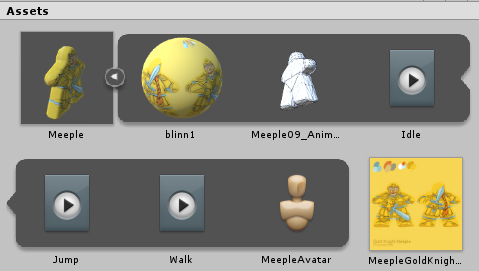
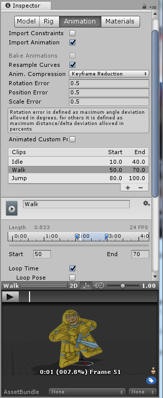
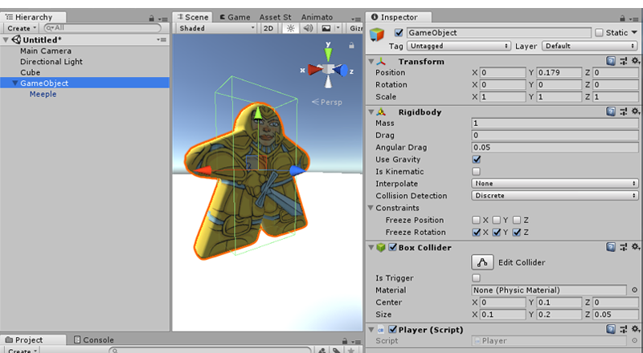
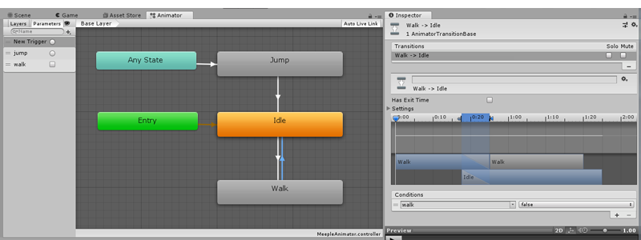
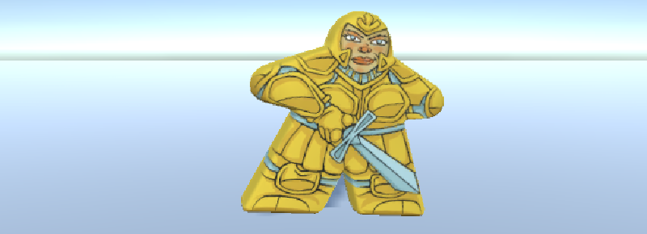

UNITY - Introduction to Unity Animation Pipeline UNITY - Introduction to Unity Animation Pipeline
Given a 3D animated “Meeple” exported as an FBX mesh and PNG texture, import into Unity.
Make Meeple playable with a Mecanim State Machine.
PART A: Import files into Unity
PART B: Build the Scene
PART C: Build the State Machine
PART D: Add Player Script
UNITY TUTORIAL #3:
Mecanim: Animation Controllers and State Machines
IMPORT ANIMATED 3D CHARACTER INTO UNITY:
PART A: Import FBX and PNG files into Unity:
1. Create a new 3D Unity Project. In the Project window drag the provided Meeple
FBX and texture PNG file into the Assets folder.
2. Select the FBX in the Project and in the Inspector choose the top “Model” tab. If texture was not automatically applied to the FBX, scroll down the Inspector and drag the PNG texture onto the available slot.
3. Still in the Inspector, open the "Animations" tab. Under “Clips” hit the [+] button three times. Name the three new clips Idle, Walk, and Animation. Set their ranges to match the frames in the Maya file (you may need to turn off "clamp ranges" first):
Idle:10-40
Walk: 50-70
Jump: 80-100
4. With each of Idle and Walk selected turn on Loop Time.
5. Scroll down to hit [Apply].
The clips are added to Meeple FBX in the Project.

|
 |
PART B: Build the Scene:
1. Add a ground: GameObject > 3D Object > Cube. Inspector: Scale = 7 / 0.3 / 8.
2. Add Meeple to the Hierarchy, to locate it at the Scene origin.
3. Add GameObject > Light > Directional Light. In the Inspector set Shadow Type = Hard.
4. Rotate the Camera to face and frame the Meeple. Rotate the Directional light toward the Meeple front.
5. Add an Empty GameObject, leave it located at the Scene origin. Name it MeepleGO and parent the Meeple (mesh) to MeepleGO (empty game object) by dragging the Meeple mesh onto the empty game object in the Hierarchy.
6. Select the parent MeepleGO in the Hierarchy.
In Inspector add Components:
Physics > Rigidbody (Constraints: Freeze Rotations)
Physics > Box Collider (Collider Size = 0.1 / 0.2 / 0.05, Center = 0 / 0.1 / 0).
|

PART C: Build the State Machine:
1. Create Animator Controller: RightClick in Project, Create > New Animation Controller.
Name it MeepleAnimator.
Select the Meeple (mesh child) and in the Inspector drag MeepleAnimator into the Animator slot.
2. DoubleClick the MeepleAnimator in the Project to open the State Machine (the Animator Tab).
3. Drag the three Animation Clips from the Project into the Animator tab.
RightClick the Idle clip to Set as Default State (turns orange).
4. Add Transitions: RightClick a Clip in the State Machine, choose “Make Transition,” click on target clip.
Make four such transitions:
Idle -> to -> WalkWalk -> to -> IdleAny State -> to -> JumpJump -> to -> Idle
5. Add Parameters: In the neighboring Parameters panel hit [+] to make two Parameters:
a Boolean called “walk” a Trigger called “jump”
NOTE: These are the hooks that the script will activate, so keep them lowercase to be the same as in the code, below.
6. Select each transition arrow and set Conditions in the Inspector:
a. To [Any State -> to -> Jump] add the "jump" Trigger
b. To [Idle -> to -> Walk] add the "walk" Boolean (set to true)
c. To [Walk -> to -> Idle] add the "walk" Boolean (set to false)
Turn off "Has Exit Time" for the walk transitions so that animation starts right away (leave Has Exit Time on for Jump)
|

PART D: Add Player Script to the "MeepleGO" Empty G.O. (Meeple’s Parent):
1. RightClick Project to Create > C# Script, name PlayerMove.cs, drag and drop onto the parent MeepleGO in the Hierarchy (NOT to the child Meeple).
2. Open the script in your IDE, copy and paste the following script into it (add any recent Unity namespaces). Note this script includes references to the child's Animator and the parent's (self's) RigidBody, and statements to activate our walk and jump Conditions:
Player.CS C# script for WASD movement and Spacebar jumping:
|
using UnityEngine;
using System.Collections;
public class PlayerMove : MonoBehaviour {
public float speed = 100f;
Animator anim;
Rigidbody rigidbody;
public float JumpSpeed = 25f;
void Start(){
anim = gameObject.GetComponentInChildren<Animator>();
rigidbody =gameObject.GetComponent<Rigidbody>();
}
void FixedUpdate(){
if (Input.GetAxis("Vertical") > 0) {
rigidbody.velocity += transform.forward * speed;
anim.SetBool ("walk", true);
} else if (Input.GetAxis("Vertical") < 0) {
rigidbody.velocity += transform.forward * -1 * speed;
anim.SetBool ("walk",true);
} else if (Input.GetAxis("Horizontal") > 0) {
rigidbody.velocity += transform.right * -1 * speed;
anim.SetBool ("walk",true);
} else if (Input.GetAxis("Horizontal") < 0) {
rigidbody.velocity += transform.right * speed;
anim.SetBool ("walk",true);
} else if (Input.GetKey("space")){
anim.SetTrigger("jump");
rigidbody.AddForce (Vector3.up * JumpSpeed);
} else {
anim.SetBool ("walk", false);
rigidbody.velocity = new Vector3(0,rigidbody.velocity.y,0);
}
}
} |
Save and Play! [W] [A] [S] [D] to move, [Space] to jump.
NOTE 1: If the animation does not play, be sure you dragged the "MeepleAnimator" Animation Controller from the Project onto the Meeple mesh in Hierarchy (child) and the Player Script onto the MeepleGO (parent).
NOTE 2: Rather than hard-coding motion to specific keys, we use the AXIS Inputs so that motion can use the keys or other controllers.
To see the input options go to Edit menu > Project Settings > Inputs.
Learn more about Input scripting here |

Tutorial by Jason Wiser, Madwomb.com
|